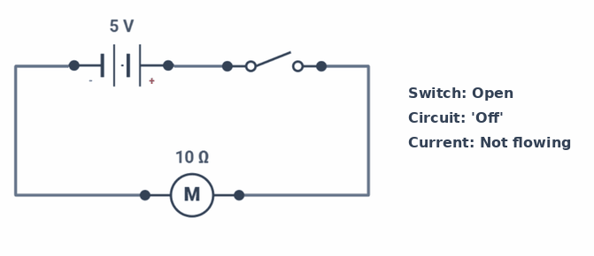
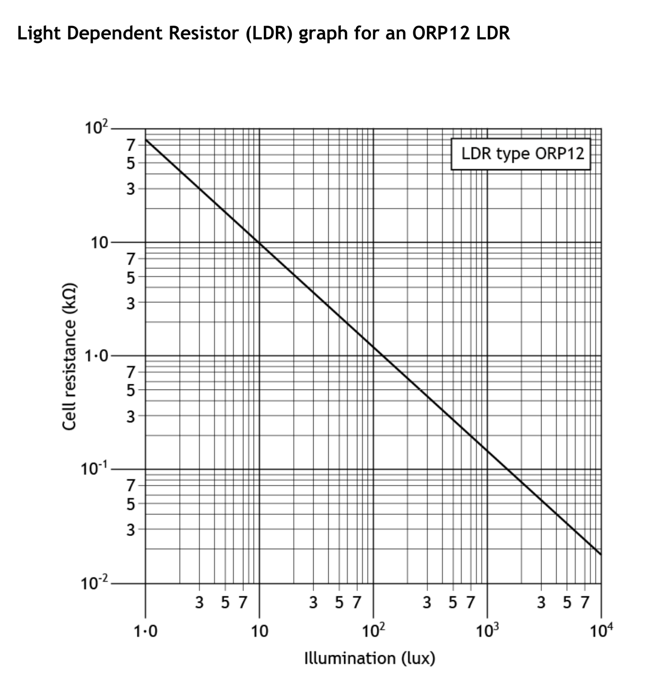
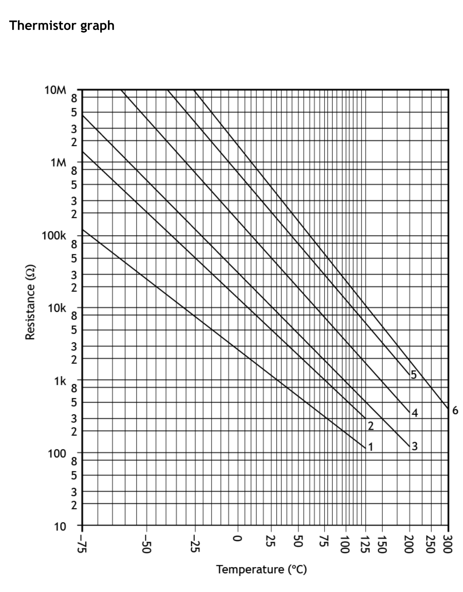

Electricity is one of the most important forms of energy in everyday life. The devices around us — phones, computers, heating systems — all rely on electrical circuits to work. In this section you will learn how circuits work and what the key quantities are.
An electric circuit is a closed loop made up of components such as batteries, lamps, switches and wires. Current can only flow if the circuit is complete.
Power supplies and voltage rails
In circuit diagrams, rather than drawing a battery symbol every time, we often use voltage rails: a labelled positive line at the top of the diagram (e.g. +9V) and a 0V line (also called ground or GND) at the bottom. Any component connected between these two rails receives the supply voltage across it. You will see this notation used throughout these notes.
+V rail (top) = positive terminal. 0V rail (bottom) = negative terminal / ground. Conventional current flows from + to 0V through the circuit.
The three key quantities
Current
Electric current is the flow of negatively charged particles called electrons. In Engineering Science, we use a standard called conventional current flow. This means we always treat current as flowing out from the positive (+) terminal of the power supply, through the circuit, and back into the negative (or 0V/ground) terminal.
Current is measured in Amperes (A). The symbol for current on a circuit diagram is A (for Ammeter). A milliamp (mA) is one thousandth of an amp: 1 mA = 0.001 A.

Conventional current flow: out of the positive (+) terminal, around the circuit, and back into the negative (−) / 0V terminal.
Voltage
Voltage is the electrical force that pushes current around a circuit. It comes from a battery or power supply. The bigger the voltage, the harder it pushes the electrons.
Voltage is measured in Volts (V). On a circuit diagram, voltage is measured using a voltmeter, shown with the symbol V inside a circle.
Resistance
All components in a circuit resist the flow of current to some degree. A resistor is a component specifically designed to reduce current flow. The greater the resistance, the less current will flow for a given voltage.
Resistance can be physically measured using a multimeter set to the resistance (Ω) function — but there is no separate resistance measurement symbol on a circuit diagram.
Resistance is measured in Ohms (Ω). Larger values are written as kΩ (kilohms, ×1000) or MΩ (megohms, ×1 000 000).
Measuring voltage and current in a circuit
Measuring voltage with a voltmeter
A voltmeter measures the voltage (potential difference) across a component. It is connected in parallel — one probe on each side of the component. A voltmeter has very high resistance so it takes almost no current from the circuit.
Voltmeter symbol: V in a circle — connected in parallel (does not break the circuit).
Measuring current with an ammeter
An ammeter measures the current through a component. It must be connected in series — the circuit must be broken and the ammeter inserted. An ammeter has very low resistance so it barely affects the circuit.
Ammeter symbol: A in a circle — connected in series (the circuit must be broken to insert it).
A demo circuit has been loaded below. Click on the switch in the circuit to allow current to flow — you should notice that the ammeter displays the value of the current flowing.
🔍 Investigation 1 — Voltage, resistance and current
⚡ Open the NoResistance simulator Create a copy of the demo circuit and then change the battery voltage and resistance value using the Properties panel and record the ammeter readings in the tables below.
1. Keep the resistance at 2 kΩ. Change the battery voltage to each value below and record the current.
Voltage (V)
Resistance
Current (mA)
1.5
2 kΩ
3
2 kΩ
5
2 kΩ
9
2 kΩ
2. Describe what happens to the current as the voltage increases.
Answer
3. Now keep the voltage at 5 V. Change the resistance to each value below and record the current.
Voltage
Resistance (Ω)
Current (mA)
5 V
500
5 V
1 000
5 V
2 000
5 V
5 000
5 V
10 000
4. Describe what happens to the current as the resistance increases.
Answer
5. Using your results, write a rule that describes the relationship between voltage, resistance and current.
Answer
Section 2: Components and Circuit Symbols 1
In Engineering Science you need to recognise and draw standard circuit symbols. These are the same symbols used by engineers worldwide — which matters because engineers, electricians and manufacturers in different countries often do not share a spoken language. A standard symbol carries its meaning without translation, so a circuit diagram drawn in Scotland can be read and built correctly by someone in Germany, Japan or anywhere else.
It helps to think of components in terms of the Systems Approach — the same framework used in the Systems and Control unit:
Category
Role in the circuit
Examples
Input
Provide power or detect a condition and send a signal into the circuit
Battery, switches, LDR, thermistor
Process
Respond to the input signal and control the output
Transistor, resistor, diode
Output
Do something useful — produce light, sound, or movement
Lamp, LED, motor, buzzer, relay
Input components — power supply
Battery
Input — power supply
Input components — switches
Switches control whether current can flow in a circuit. In the systems approach they are input devices — a person (or mechanism) operates them to send a signal to the rest of the circuit.
SPST Switch
Single Pole Single Throw
SPDT Switch
Single Pole Double Throw
Push-to-make
Normally open
Output devices
Output devices convert electrical energy into something useful. They sit at the end of the system and respond to signals from the process stage.
Lamp
Output — light
Motor
Output — motion
Buzzer
Output — sound
🔍 Investigation 2 — Switch circuits
⚡ Open the NoResistance simulator Build the following circuits. For each, paste your completed circuit design into the answer space below.
a) A lamp must light when two switches are both closed (AND behaviour). How are the switches connected?
Answer
b) A buzzer must sound when either of two switches is pressed (OR behaviour). How are the switches connected?
Answer
c) A lamp lights when a motor is not running. When a switch is pressed, the lamp switches off and the motor starts. Describe your circuit design.
Answer
d) Build a circuit where a single switch can control which of two outputs is on — when the switch is in one position a motor runs; when it is in the other position a buzzer sounds. What type of switch do you need?
Answer
e) A signal lamp must be able to be switched on and off from two different locations — for example upstairs and downstairs. Each switch must work independently. Build this circuit. (Hint: this is how staircase lighting works.)
Answer
f) Build a circuit with four lamps first in series, then in parallel, each controlled by a single switch. Which layout is more reliable if one lamp fails? Explain why.
Answer
✏️ Task 1 — Components and symbols
For any question below that asks you to draw or sketch, either describe the symbol clearly in words in the answer box, or draw it on paper / in your jotter and show your teacher.
1. Draw the circuit symbol for a) a lamp, b) a motor, c) a buzzer.
Answer
2. In the simulator, build a circuit where a buzzer sounds when switch A AND switch B are both closed. Describe your circuit.
Answer
3. Why do we use circuit symbols rather than pictures of components? Think about engineers, technicians and manufacturers from different countries working together on the same design.
Answer
Section 3: Ohm's Law
From your investigation you will have found that doubling the voltage doubles the current through a resistor. This relationship is known as Ohm's Law:
V = I × R
Voltage (V) = Current (A) × Resistance (Ω)
You can rearrange this formula to find any of the three quantities. The VIR triangle is a useful memory aid:
V
I
R
Cover the quantity you want to find — the other two show how to calculate it.
So:
V = I × R
VR
I = V ÷ R
VI
R = V ÷ I
Using Ohm's Law — worked examples
Worked example 1 — Find the current
A 6 V battery is connected to a 300 Ω resistor. Calculate the current.
1
Write the formula: I = V ÷ R
2
Substitute values: I = 6 ÷ 300
3
Calculate: I = 0.02 A = 20 mA
Worked example 2 — Find the resistance
A lamp has 9 V across it and 45 mA flowing through it. Calculate the resistance.
1
Convert mA to A: 45 mA = 0.045 A
2
Write the formula: R = V ÷ I
3
Substitute and calculate: R = 9 ÷ 0.045 = 200 Ω
✏️ Task 2 — Ohm's Law calculations
1a) A 1 kΩ resistor has 9 V across it. Calculate the current in mA.
Answer
1b) Find the resistance of a component with 12 V across it and 60 mA through it.
Answer
1c) A 470 Ω resistor has 25 mA flowing through it. Calculate the voltage across it.
Answer
1d) A circuit has a 6 V battery and 30 mA of current. Calculate the total resistance.
Answer
⚡ Check your answers using the simulator above.
Section 4: Resistors in Series
When resistors are connected one after another (in series), their resistances add together:
Rtotal = R1 + R2 + R3 + …
This is because the current must pass through every resistor, so each one adds to the total opposition.
The same current flows through every resistor — there is only one path.
Worked example — Series resistors
Three resistors are connected in series: 100 Ω, 220 Ω and 330 Ω. The supply voltage is 9 V. Find the total resistance and the circuit current.
1
Total resistance: RT = 100 + 220 + 330 = 650 Ω
2
Circuit current: I = V ÷ R = 9 ÷ 650 = 13.8 mA
3
Voltage across 100 Ω resistor: V = I × R = 0.0138 × 100 = 1.38 V
A series circuit with three resistors (100 Ω, 220 Ω and 330 Ω — the same values as the worked example above), a voltmeter and an ammeter has been loaded below. Use the voltmeter to check the voltage across each resistor, and use the ammeter to confirm the circuit current matches your calculation. Try moving the ammeter to different positions to confirm the current is the same everywhere.
✏️ Task 3 — Series circuits
1. Two resistors (150 Ω and 270 Ω) are connected in series across a 9 V supply. Calculate:
a) the total resistance
Answer
b) the circuit current
Answer
c) the voltage drop across each resistor
Answer
2. Three resistors (15 Ω, 24 Ω and 60 Ω) are in series. Calculate the total resistance.
Answer
3. Two resistors in series: 25 Ω and 75 Ω. The voltage across the 25 Ω resistor is 4 V. Find the circuit current and the supply voltage.
Answer
4. A series circuit has a 12 V supply. The current is 20 mA. One resistor is 220 Ω. Using the voltage rule, find the value of the second resistor.
Answer
⚡ Build these circuits in the simulator and check your answers.
Section 5: Voltage Drops and Current Junctions
🔍 Investigation 3 — Measuring voltage and current
⚡ Open the NoResistance simulator Build the following circuit: a 9 V battery, a 1 kΩ resistor and a 470 Ω resistor in series. Add a voltmeter across each component and an ammeter in series.
1. Record the voltage across each component.
Component
Voltage (V)
Battery
1 kΩ resistor
470 Ω resistor
Total (R1 + R2)
2. What do you notice about the total voltage across both resistors compared to the battery voltage?
Answer
3. Move the ammeter to different positions in the series circuit. What do you notice about the current at each point?
Answer
Voltage drops in a series circuit
An important rule governs voltage in series circuits:
Voltage rule: the sum of the voltage drops around any complete loop equals the supply voltage.
📖 This rule is part of Kirchhoff's Laws (after the German physicist Gustav Kirchhoff). You do not need to remember his name for the exam — just the rule itself.
In a series circuit: the current is the same everywhere, and the voltages add up to the supply voltage.
Note: a second rule about current at junctions applies to parallel circuits — you will meet this in Section 6.
Section 6: Parallel Circuits
What is a parallel circuit?
In a parallel circuit there is more than one path for current to flow. Each branch receives the full supply voltage, so devices operate independently. A common example is the lighting in a room — each light has its own switch and works independently of the others.
Each branch receives the full 9 V. Removing one resistor does not affect the others.
In a parallel circuit: each branch gets the full supply voltage, and the currents in each branch add together to give the total current.
📖 This is Kirchhoff's Current Rule: the current flowing into a junction equals the current flowing out. Combined with the voltage rule from Section 5, these two laws govern every circuit you will ever analyse.
Resistors in parallel
When resistors are connected in parallel, the combined resistance is less than any individual resistor. This is because more paths are available for current to flow.
General formula (for any number of resistors):
1/RT = 1/R1 + 1/R2 + 1/R3 + …
Special case: two resistors in parallel (the most common situation):
RT = (R1 × R2) ÷ (R1 + R2)
Product ÷ Sum — only works for two resistors
Worked example 1 — Two resistors in parallel (full solution)
R1 = 270 Ω, R2 = 100 Ω, supply voltage = 9 V. Find the combined resistance, circuit current, and current through each branch.
A parallel circuit with three lamps and individual switches has been loaded below. Click each switch to turn individual lamps on and off — notice that each lamp operates independently and that the full supply voltage appears across each branch.
✏️ Task 4 — Parallel circuits
1. A 10 Ω and 14 Ω resistor are connected in parallel across a 6 V supply. Calculate:
a) total resistance
Answer
b) circuit current
Answer
c) current through each resistor
Answer
2. A 660 Ω and 470 Ω resistor are in parallel. The supply voltage is 9 V. Calculate the total resistance, circuit current, and current through each branch. Verify that the branch currents add up to the total current.
Answer
3. A 440 Ω resistor is in parallel with a 330 Ω resistor. The current through the 440 Ω is 300 mA. Find the current through the 330 Ω.
Answer
4. A 6 Ω and 75 Ω resistor are in parallel across 12 V. Calculate the total circuit current.
Answer
⭐ Extension task
5. For the circuit below, calculate a) combined resistance, b) current from battery, c) current in each branch.
R1 = 100 Ω, R2 = 150 Ω, R3 = 300 Ω all in parallel across 12 V.
Answer
⚡ Build these circuits in the simulator and check your answers.
Section 7: Combined Series and Parallel Circuits
Real circuits often have a mix of series and parallel connections. To solve these you must simplify step by step:
The blue resistor (R1) is in series; the green resistors (R2, R3) are in parallel with each other.
Find the combined resistance of the parallel section first (call it RP).
Add RP to any series resistors to find the total resistance RT.
Use Ohm's Law to find the circuit current.
Use the voltage and current rules to find individual voltages and currents.
Worked example — Series/parallel circuit
R1 = 100 Ω in series with a parallel combination of R2 = 300 Ω and R3 = 150 Ω. Supply = 9 V.
Total resistance: RT = R1 + RP = 100 + 100 = 200 Ω
3
Circuit current: IC = V ÷ RT = 9 ÷ 200 = 45 mA
4
Voltage across R1: VR1 = 0.045 × 100 = 4.5 V
5
Voltage across parallel section (voltage rule): VP = 9 − 4.5 = 4.5 V
6
Current through R2: I2 = 4.5 ÷ 300 = 15 mA
7
Current through R3: I3 = 4.5 ÷ 150 = 30 mA
8
Check: I2 + I3 = 15 + 30 = 45 mA — matches IC. ✓
✏️ Task 5 — Combined circuits
1. A 1 kΩ resistor is in series with two parallel resistors (both 500 Ω) across a 9 V supply. Calculate:
a) combined resistance
Answer
b) circuit current
Answer
c) voltage across the 1 kΩ resistor
Answer
d) current through each 500 Ω resistor
Answer
2. A 1 kΩ resistor is in series with two parallel resistors (both 1 kΩ) across 12 V. Find the combined resistance, circuit current, voltage across the series resistor, and current through each parallel resistor.
Answer
⭐ Extension task
3. A 10 kΩ resistor is in series with a parallel combination of 500 Ω and 1 kΩ across 9 V. Find a) combined resistance, b) circuit current, c) voltage across the 10 kΩ, d) current through the 500 Ω.
Answer
Section 8: Voltage Dividers
A voltage divider is two (or more) resistors connected in series across a power supply, with an output connection taken from the midpoint between them. In a series circuit, each resistor gets a share of the supply voltage — the bigger the resistor, the bigger its share.
Label
What it means
Vs
Supply voltage — equal to V1 + V2
R1
Upper resistor (or component)
R2
Lower resistor (or component)
V1
Voltage from Vs to the output connection
V2 / Vout
Voltage from output to 0V — this is the useful output
RT
Total resistance = R1 + R2
0V
Ground / negative terminal of supply
Calculating Vout
There are two ways to find Vout (V2), depending on what you already know:
Method 1 — if you know V1
V1/V2 = R1/R2
The ratio of voltages equals the ratio of resistances
Method 2 — if you know Vs
Vout = Vs × R2 ÷ RT
where RT = R1 + R2
You can also find V1 using Kirchhoff's Voltage Law: Vs = V1 + V2, so V1 = Vs − V2.
Sensor components and transducers
Three components change their resistance in response to their environment, making them ideal for voltage divider sensors. These are called input transducers — components that convert a physical change (light, heat, pressure) into an electrical signal.
💡 Transducers convert energy from one form to another. Input transducers (LDR, thermistor) convert physical conditions into electrical signals. Output transducers (lamp, motor, buzzer) convert electrical energy back into light, movement, or sound.
Variable Resistor
Adjusts by hand
Thermistor
Responds to temperature
LDR
Responds to light
Typically, a thermistor or LDR is connected in series with a fixed resistor to form a voltage divider. The output is taken from across the fixed resistor (or the sensor, depending on whether you want the voltage to rise or fall as the condition changes).
Reading resistance values from graphs
In real circuits, manufacturers publish characteristic graphs showing how sensor resistance changes with conditions. You read the resistance off the graph, then substitute it directly into the voltage divider formula. Both graphs below use a logarithmic scale on the resistance axis — each major gridline represents a ×10 change, so read carefully.
Course specification: Candidates should gain experience of interpreting information on LDRs and thermistors from given graphs, and use resistance values read from those graphs to calculate output voltages from voltage dividers.
LDR characteristic graph — ORP12
An LDR has high resistance in the dark and low resistance in bright light. The graph below shows how the resistance of an ORP12 LDR changes with illumination. Both axes are logarithmic.

Fig. 1 — ORP12 LDR: resistance vs illumination (log–log scale)
LDR: resistance falls as light increases. The y-axis is in kΩ — remember to convert to Ω before calculating.
How to read the LDR graph
Find your illumination value (in lux) on the x-axis.
Draw a vertical line up from that point until it meets the curve.
Draw a horizontal line left to the y-axis and read off the resistance in kΩ.
Convert to Ω if needed (multiply by 1 000).
Values read from the ORP12 graph at key light levels:
Light level
Illuminance (lux)
LDR resistance (from graph)
Very dim room
10
~70 kΩ (70 000 Ω)
Dim room
100
~7 kΩ (7 000 Ω)
Bright room
1 000
~700 Ω
Bright sunlight
10 000
~70 Ω
Thermistor characteristic graph
An NTC (Negative Temperature Coefficient) thermistor has high resistance when cold and low resistance when hot. The graph below shows six different thermistor types (curves 1–6). Use curve 3 for all questions in this section unless told otherwise.

Fig. 2 — Thermistor resistance vs temperature. Use curve 3 for all exercises.
NTC Thermistor: resistance falls as temperature rises. Hot → low resistance. Cold → high resistance.
How to read the thermistor graph
Identify curve 3 on the graph (labelled at the right-hand end).
Find your temperature value on the x-axis.
Draw a vertical line up to curve 3, then a horizontal line left to the y-axis.
Read off the resistance. Note the y-axis uses k and M prefixes — convert to Ω.
Values read from curve 3 at key temperatures:
Temperature (°C)
Thermistor resistance (curve 3)
0
~27 kΩ (27 000 Ω)
25
~10 kΩ (10 000 Ω)
50
~4 kΩ (4 000 Ω)
75
~1.7 kΩ (1 700 Ω)
100
~800 Ω
Using a graph value in a voltage divider calculation
The process is always the same: read the resistance from the graph, then substitute it into the voltage divider formula exactly like any fixed resistor.
Worked example 1 — LDR voltage divider (reading from graph)
A circuit has a 9 V supply, a fixed resistor R1 = 10 kΩ (top), and an ORP12 LDR as R2 (bottom). Vout is measured across the LDR. Find Vout when the illumination is 100 lux.
1
Read from the graph: at 100 lux, the ORP12 resistance ≈ 7 kΩ = 7 000 Ω
2
Total resistance: RT = 10 000 + 7 000 = 17 000 Ω
3
Voltage divider formula: Vout = Vs × RLDR ÷ RT
4
Vout = 9 × 7 000 ÷ 17 000 = 3.71 V
Worked example 2 — LDR in bright sunlight
Same circuit. Find Vout across the LDR in bright sunlight (10 000 lux).
1
Read from graph: at 10 000 lux, resistance ≈ 70 Ω
2
RT = 10 000 + 70 = 10 070 Ω
3
Vout = 9 × 70 ÷ 10 070 = 0.063 V — very small, because the LDR has very low resistance and takes only a tiny share of the voltage.
Worked example 3 — Thermistor voltage divider (reading from graph)
A 9 V circuit has a thermistor (curve 3) as the upper resistor (R1) and a fixed resistor R2 = 10 kΩ as the lower. Vout is taken across the fixed resistor. Find Vout at 25°C and at 100°C.
Conclusion: as temperature rises, the thermistor resistance falls, so it takes a smaller share of the voltage — Vout across the fixed resistor rises.
✏️ Task 6a — Reading sensor graphs and calculating Vout
Use the ORP12 LDR graph and the thermistor graph (curve 3) above to answer these questions. For each calculation, show clearly: the resistance you read from the graph, RT, and Vout.
1. Use the LDR graph to read the resistance of the ORP12 at the illumination levels below, and record them in the table.
Illumination (lux)
LDR resistance (read from graph)
10
100
1 000
10 000
2. An ORP12 LDR is the lower resistor (R2) in a voltage divider with a 10 kΩ fixed resistor (R1) and a 9 V supply. Vout is measured across the LDR. Using your graph readings from Q1, calculate Vout at each light level.
Illumination
LDR resistance (from graph)
RT
Vout across LDR
10 lux
1 000 lux
3. Describe what happens to Vout across the LDR as the light gets brighter. Explain why, using the graph and your knowledge of voltage dividers.
Answer
4. Use the thermistor graph (curve 3) to read the resistance at each temperature below.
Temperature (°C)
Thermistor resistance (read from curve 3)
0
25
75
100
5. The thermistor (curve 3) is the upper resistor in a voltage divider with a 10 kΩ fixed resistor (lower) and a 9 V supply. Vout is measured across the fixed resistor. Using your readings from Q4, calculate Vout at 0°C and at 100°C.
Answer
⭐ Extension task
6. A designer needs Vout = 6 V from a 9 V supply when the ORP12 LDR is illuminated at 1 000 lux. Vout is taken across the fixed resistor (lower position). Use the graph to find the LDR resistance at 1 000 lux, then calculate the value of fixed resistor needed. Show all working.
An LDR voltage divider circuit has been loaded below. The LDR is in the lower position and the voltmeter measures Vout across it. Click on the LDR and use the slider to adjust the light level — watch how the voltmeter reading changes.
What does the output voltage tell us?
In this configuration, the LDR is the lower resistor and Vout is measured across it. As the light level increases, the LDR resistance falls. Because it now takes a smaller share of the total resistance, it also takes a smaller share of the supply voltage — so Vout falls as it gets brighter.
Conversely, as it gets darker, the LDR resistance rises, it claims a larger share of the voltage, and Vout rises. This circuit therefore produces a high output voltage in darkness — which is why it is often called a dark sensor.
LDR in the lower position: Vout is high in the dark, low in the light — a dark sensor. LDR in the upper position: Vout is high in the light, low in the dark — a light sensor.
LDR lower — Vout high in the dark (dark sensor)
LDR upper — Vout high in the light (light sensor)
✏️ Task 6b — Light sensor vs dark sensor
1. Using the simulator above, record Vout at three different light levels and describe the trend.
Light level
Vout (V)
Dark
Medium
Bright
2. Now rebuild the circuit in the simulator with the LDR and fixed resistor swapped (LDR on top, fixed resistor below, voltmeter across the fixed resistor). Record Vout at the same three light levels.
Light level
Vout (V) — LDR on top
Dark
Medium
Bright
3. In the second circuit (LDR on top), Vout is high when it is bright and low when it is dark. This configuration is often called a light sensor. Explain why the first circuit (LDR on the bottom) is commonly known as a dark sensor.
Answer
4. A designer wants to switch on a street lamp automatically when it gets dark. Should they use a light sensor or a dark sensor configuration for the voltage divider? Explain your reasoning.
Answer
🔍 Investigation 4 — How does Vout change in a sensor voltage divider?
In this investigation you will explore how the output voltage of a sensor voltage divider depends on (a) the sensor's resistance, and (b) which way round the components are placed. Use the simulator above. Vout is always measured between the midpoint of the divider and 0 V (ground) — the voltage at the mid-rail.
Part A — Effect of resistance on Vout
Set up: LDR in the upper position, 10 kΩ fixed resistor in the lower position. Vout is measured across the fixed resistor (lower component).
1. Adjust the LDR light level from dark to bright. Record Vout at each condition.
Light condition
LDR resistance (approx.)
Vout (across lower resistor)
Very dark
Dim
Bright
2. As it gets darker, the LDR resistance increases. What happens to Vout across the lower (fixed) resistor? Explain using the idea of voltage sharing.
Answer
Part B — Effect of swapping the components
Now swap: put the fixed resistor in the upper position and the LDR in the lower position. Vout is now measured across the LDR.
3. Repeat at the same three light conditions.
Light condition
LDR resistance (approx.)
Vout (across lower LDR)
Very dark
Dim
Bright
4. Compare your results from Parts A and B. What is the key difference in how Vout responds to changing light levels? Which arrangement gives a higher Vout in darkness?
Answer
5. A designer wants Vout to be high when the temperature is high. Should the thermistor be in the upper or lower position? Explain your reasoning.
Answer
Key conclusion: a sensor voltage divider produces a voltage that varies with conditions — but a varying voltage on its own cannot switch a motor or lamp on and off. We need a component that can use a small voltage from the sensor circuit to control a much larger current in a separate output circuit. That component is the transistor.
✏️ Task 6c — Voltage divider calculations
1. A voltage divider has R1 = 200 Ω and R2 = 600 Ω with a 12 V supply. Calculate the voltage across each resistor.
Answer
2. A voltage divider has R1 = 1.2 kΩ and R2 = 2.4 kΩ with a 9 V supply. Calculate the voltage across the 1.2 kΩ resistor.
Answer
3. A voltage divider produces 4 V across R2 from a 12 V supply. If R2 = 300 Ω, calculate R1.
Answer
4. A thermistor is used in a voltage divider with a 10 kΩ fixed resistor and 9 V supply. At 80°C the thermistor resistance is 500 Ω. At 20°C it is 10 kΩ.
a) Calculate Vout across the fixed resistor at 80°C.
Answer
b) Calculate Vout across the fixed resistor at 20°C.
Answer
c) What happens to the voltage across the thermistor as temperature increases? Explain why.
Answer
⭐ Extension task
5. A voltage divider is required to give Vout = 4.5 V from a 9 V supply when a thermistor has a resistance of 2 kΩ at 100°C. Calculate a suitable value for the fixed resistor. State whether Vout will increase or decrease as temperature drops, and explain your answer.
Answer
Section 9: Components and Circuit Symbols 2 — Diodes and LEDs
Diodes
A diode allows current to flow in one direction only. The two terminals are the anode (A, +) and cathode (c, −). Current only flows when the anode is at a higher voltage than the cathode.
Diode
One-way current
LED
Emits light
A Light-Emitting Diode (LED) is a special diode that produces light when current flows through it. The short leg is the cathode (c) and must be at a lower voltage than the anode — in most circuits this means connecting the cathode closer to 0V. LEDs are used as indicators to show when a circuit is working.
Use the full-screen simulator to explore diode and LED circuits. Try placing a battery, resistor and LED, then click SIMULATE to see the LED light. Then reverse the LED and observe what happens.
✏️ Task 7 — Diodes and LEDs
For any question below that asks you to draw or sketch, either describe the symbol clearly in words in the answer box, or draw it on paper / in your jotter and show your teacher.
1. Draw the circuit symbol for a) a diode, b) an LED. Label the anode and cathode on each.
Answer
2. In the simulator, build a circuit where a green LED lights when switch A AND switch B are both closed. Describe your circuit. Then reverse the LED and describe what happens.
Answer
Section 10: Transistors
Why do we need a transistor?
You have seen that a sensor voltage divider produces a voltage that varies with conditions — rising in darkness, falling in light, or rising with heat. But that varying voltage on its own cannot switch a motor, a buzzer, or a lamp. Those output devices need a much larger current than the tiny sensor circuit can ever supply.
What we need is a component that can use a small voltage (and tiny current) from the sensor circuit to control a much larger current in a completely separate output circuit. That component is the transistor.
💡 The tap analogy: imagine a water tap. A tiny turn of the handle (a small base current) allows a large flow of water through the pipe (a large collector current). The transistor works the same way — a small signal at the base controls a much larger current between collector and emitter. The transistor is the key component here, not a relay — it is a solid-state (no moving parts) electronic switch built into a tiny package.
What is a transistor?
The type used in N5 Engineering Science is the NPN Bipolar Junction Transistor (BJT). It is a solid-state semiconductor device — it has no moving parts and can switch on and off millions of times per second. It has three legs:
NPN Transistor
B=Base, C=Collector, E=Emitter
Base (B) — the control input. Connected to the output of the sensor voltage divider. When VB rises above ~0.7 V, the transistor switches on.
Collector (C) — connected to the positive supply through the output device (lamp, motor, relay coil, etc.).
Emitter (E) — connected to 0 V (ground). Current exits here.
How the transistor switches
Base voltage (VB)
Transistor state
Collector–emitter path
Output device
Below ~0.7 V
OFF
Open circuit — no current flows
Off
Above ~0.7 V
ON
Closed — large current flows freely
On
⚠️ At N5, we treat the transistor as a simple on/off switch. In reality the transistor switches on gradually as base voltage increases — this amplification behaviour is beyond the scope of the course.
The complete transistor switching circuit
A transistor switching circuit has two separate loops:
Input (base) circuit: the sensor voltage divider. When conditions change, Vout from the divider rises above 0.7 V and turns the transistor on.
Output (collector) circuit: the output device sits between the positive supply and the collector. When the transistor switches on, current flows through the device.
The two circuits share only the common 0 V connection at the emitter. This separation means the output circuit can operate at a much higher current than the delicate sensor circuit — the transistor bridges the gap between them.
The simulator below shows a transistor switching circuit controlled by an LDR voltage divider. Adjust the light level and observe: (1) how the base voltage changes, (2) the exact point at which the transistor switches on, and (3) what happens to the output device.
The need for a protective diode
If the output device is a relay coil, motor, solenoid, or buzzer, there is a hidden danger. These devices contain coils of wire. When the transistor switches the current off, the magnetic field inside the coil collapses very rapidly. This generates a large voltage spike in the reverse direction — sometimes hundreds of volts, lasting only a fraction of a millisecond.
This is called back e.m.f. (back electromotive force). It travels backwards through the collector pin and can permanently destroy the transistor.
Whenever a transistor drives a coil-based device (relay, motor, solenoid, buzzer), a protective diode must be wired in reverse across that device to absorb the back e.m.f. spike.
The diode works in two phases:
Transistor ON: current flows normally through the coil. The diode is reverse-biased — it blocks the current and plays no part.
Transistor OFF: the back e.m.f. tries to drive current backwards. The diode is now forward-biased. It conducts and provides a safe circular path around the coil, dissipating the energy harmlessly as a tiny amount of heat. The transistor never sees the spike.
Two identical circuits are shown side by side. The left circuit has a motor driven by a transistor with no protective diode. The right circuit has the same setup but with a diode across the motor. Adjust the LDR on each side to switch the transistor on and off — observe the voltmeter readings and compare what happens at the collector when the transistor switches off.
🔍 Investigation 5 — Transistor switching
Build a light-sensing transistor circuit in the simulator. Use a 9 V supply, an LDR in series with a 10 kΩ fixed resistor as the voltage divider (base circuit), and an LED in series with a 470 Ω resistor as the output (collector circuit).
1a. Adjust the LDR light level. Describe what happens to the LED in bright and dark conditions.
Answer
1b. Use a voltmeter to measure the voltage at the transistor base. At what voltage does the transistor switch on?
Answer
2. Replace the LDR with a thermistor. Describe what happens as temperature is varied. Does the LED switch on when it gets hotter or cooler? Which component position (upper or lower in the divider) gives this behaviour?
Answer
3. Replace the LED with a relay coil and add a protective diode across the coil. Explain in your own words why the diode is needed and what would happen to the transistor without it.
Answer
✏️ Task 8 — Transistor circuit design
Design transistor switching circuits for the functions below. Sketch each circuit and explain your component choices. You can build your design in the simulator and paste it into the answer space, describe it clearly in words, or sketch it on paper and show your teacher.
1. A motor switches on when it gets light.
Answer
2. A solenoid switches on when it gets cold. Include a protective diode in your design. Mark clearly where the diode goes and explain why it is needed.
Answer
Section 11: Relays
Why use a relay?
Many output devices — such as motors in industrial machinery or mains-powered heaters — require much higher voltages and currents than a low-power electronic circuit can safely supply. A relay is the link between the two: a small control current switches a magnetically operated contact that controls the high-power circuit.
How the relay works
When current flows through the relay coil, it becomes an electromagnet. This attracts a flexible metal strip called the armature, which moves and closes (or opens) the switch contacts. When the current stops, a spring pulls the armature back.
A relay uses a small current in the coil to switch a much larger current in a completely separate output circuit — with no electrical connection between the two.
Relay SPDT
Coil + switch
⚡ Try it — Relay circuit: low-voltage control of a mains heater
The circuit below shows a 5 V microcontroller-style circuit using a transistor and relay to switch a 230 V mains heater. Adjust the variable resistor to change the base voltage and observe how the transistor controls the relay, which in turn switches the mains heater on and off — with complete electrical isolation between the two circuits.
✏️ Task 9 — Relays
1. Explain in your own words why a relay is needed to connect the 5 V control circuit to the 230 V mains heater. Why can the transistor not do this job directly?
Answer
2. Looking at the circuit in the simulator, the transistor has no protective diode across the relay coil. Why does this make the transistor vulnerable? What would you add to protect it?
Answer
3. In the simulator, adjust the variable resistor so the heater switches on. Describe what you observe in both the control circuit and the mains circuit.
Answer
4. Give two reasons why it would be dangerous to connect the mains heater directly to the transistor output instead of using a relay.
Answer
⭐ Extension task
5. The relay in this circuit is an SPDT type (Single Pole Double Throw). It has a normally-open (NO) and a normally-closed (NC) contact. Describe how you could use the NC contact to make a circuit that switches the heater off when the transistor switches on. When might this be useful?
Answer
Section 12: Circuit Construction — Breadboards
A prototype circuit board (breadboard) lets you build and test circuits without soldering. Components and wires can be inserted and removed easily, making it ideal for testing and fault-finding before making a permanent circuit.
How a breadboard works
The centre area has columns of 5 holes connected together. Each column is one node.
Components are placed across the centre gap, with each leg in a different column.
The outer rows (marked + and −) run the full length and are used for power supply connections.
Wires connect different columns to create the circuit paths.
Always make the 0V connection before the +V connection. Check all connections before applying power.
Using a digital multimeter
A digital multimeter (DMM) can measure voltage, current and resistance. Key rules for using it:
Measurement
Connection
Position in circuit
Voltage
Red → VΩ, Black → COM
In parallel across component
Current
Red → mA, Black → COM
In series (break circuit)
Resistance
Red → VΩ, Black → COM
Component removed from circuit
✏️ Task 10 — Circuit construction
1. In the simulator, build an LED series circuit with a 9 V battery, 470 Ω resistor and red LED. Measure the voltage across each component using a voltmeter. Record your readings.
Component
Voltage (V)
Battery
Resistor
LED
2. Add an ammeter to the circuit. Record the current.
Answer
3. Verify the voltage rule using your measurements. Show your working.
Answer
4. Build the transistor switching circuit from Section 10 and measure the base-emitter voltage when the transistor is on. What value do you get?
Answer
💾 Answers saved automatically in this browser on this device.